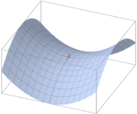

Muitas aplicações matemáticas utilizam o conceito de ponto de sela de uma superfície ilustrado nesta figura (pode haver mais de um):Um conceito análogo pode ser definido para uma matriz. Um elemento de uma matriz retangular é dito um ponto de sela se ele é, ao mesmo tempo, um elemento mínimo da sua linha e um elemento máximo da sua coluna. Por exemplo, dada a matriz a:
1 2 3 4 5 6 7 8 9o elemento a2,0 é um ponto de sela (numerando as linhas e as colunas a partir de 0).Uma matriz pode não ter nenhum ponto de sela ou então pode ter vários; por exemplo, a seguinte matriz tem quatro pontos de sela:
1 2 3 1 2 3 4 5 6 4 5 6 7 8 9 7 8 9 1 2 3 1 2 3 4 5 6 4 5 6 7 8 9 7 8 9O objetivo desta tarefa é implementar um programa que determina todos os pontos de sela de uma matriz quadrada, em ordem lexicográfica de linhas e de colunas (v. mais adiante). O arquivo de entrada para o programa (stdin) conterá os seguintes dados:
A entrada para o exemplo da matriz 6×6 acima poderia ser:
- uma linha com um número inteiro 1≤N≤20 que é a ordem da matriz;
- N linhas, cada uma com N inteiros que constituem a linha da matriz.
Note-se que os eventuais comentários contidos nas linhas de entrada devem ser ignorados pelo programa. A saída (arquivo stdout) produzida pelo programa deverá ser da forma como ilustrado a seguir para o mesmo exemplo, incluindo os índices e o valor do ponto encontrado:
Os pontos de sela da matriz são: nenhumObservações:
- O programa deve ser submetido em linguagem C, padrão C99.
- O programa deve produzir, ainda no arquivo stdout a mensagem "Dados inválidos" quando o valor de N fornecido não obedece aos limites ou quando faltam dados.
- O programa deve devolver sempre o código de execução igual a zero, mesmo quando detecta dados inválidos (comandos 'return 0;' ou 'exit(0);').
- A saída do programa deverá ser idêntica à ilustrada nos testes que acompanham a tarefa. Em particular, os caracteres acentuados devem usar a codificação ISO-8859-1 (também conhecida como Latin-1) ocupando um byte cada.
- O número de operações realizado pelo programa deve ser proporcional a N2 e não deve depender do número de pontos de sela encontrados (sugestão: use vetores auxiliares).
- O programa pode alocar uma matriz de tamanho máximo dos dados (20×20).
- O número máximo de submissões é 10.
Last update: "enunc.html: 2014-07-24 (Thu) 11:31:15 BRT (tk)"